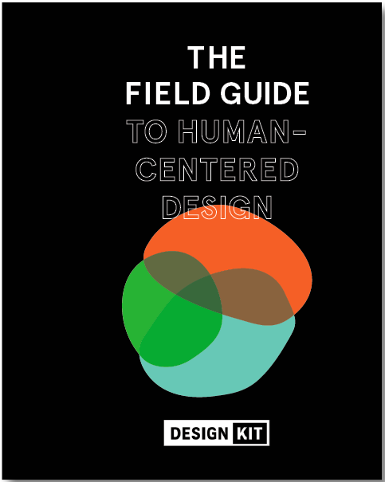

HCD (Human-Centered Design)
Human-Centered Design is a framework for designing solutions that are responsive to the unique needs and aspirations of the people they are meant to serve. While HCD methodology can be applied in many different formats and frameworks, this toolkit is based on the framework created by IDEO.org and used widely across the international development sector.
Human-Centered Design Methodology
IDEO’s HCD Field Guide serves to help organizations “hear the needs of constituents in new ways, create innovative solutions to meet these needs, and deliver solutions with financial sustainability in mind.” With this in mind, the VXW Award leveraged HCD to help activists:
- Understand the unique needs and sensitivities of the “violence against women” context
- Ensure that solutions are desirable and appropriate for the women who need them
- Increase the likelihood that the resulting mobile applications are useful and sustainable
Based on the experience of using HCD in this context, The Asia Foundation decided to publish a “refined” HCD Toolkit to help other individuals and organizations who wish to design mobile applications apply the methodology for EVAW or another similar context.
Toolkit Refinements
This toolkit layout follows the basic structure of the HCD model promoted by IDEO.org, which guides solutions designers through the process of HEAR, CREATE and DELIVER. The “refined” process outlined here recommends a series of simplified steps, tools and activities for designing mobile apps during each of these phases. The steps are outlined in a way that requires minimal technical knowledge, and can be applied for the design of any mobile app that seeks to serve a human-centered problem.
The toolkit also encourages an extra set of tips and examples to consider when tailoring the process to the unique sensitivities of EVAW. These considerations are presented as case studies, examples, stories and tips throughout the toolkit.
Some specific “refinements” are outlined below:
- CONTINUOUS CYCLE: Mobile app design and development are both extremely "iterative" in nature – meaning that you will want to test, experience, and refine your assumptions, solutions and apps as many times as necessary in order to learn, evaluate and improve your app for your users. For this reason, the RHCD Toolkit outlines the HEAR, CREATE and DELIVER phases as a continuous cycle that repeats even after the first version of the app is developed.
- CONSIDER: The RHCD Toolkit begins with a newly added phase called “CONSIDER” – which outlines key considerations to help design solutions specific to the EVAW context. These considerations are reinforced throughout the toolkit, and can help guide you with examples and important tips as you go.
- ACTIVITIES: The IDEO.org framework is design to be flexible, and easily adapted to your specific goals and context. With this in mind, we have shortened certain steps, added new activities where applicable, and adjusted the titles and language to fit the terminology most often used for mobile technology.
- SUPPORTING TOOLS: We complement the activities we recommend with a set of tools at the end of each section. These tools include resources and methods pulled from leading HCD, UX and other design methodologies, to provide a set that is specifically suited for this context.
If you wish to learn more about our experience and learning throughout the HCD process, we welcome you to review our , which documents key lessons learned and recommendations.
Other HCD Resources
You may also find it useful to reference other design toolkits, HCD resources and online courses for more ideas and insights. Here are several examples:
Toolkits
- HCD Design Kit by IDEO.org
- mAgri Design Toolkit by GSMA and Frog
- Insights into Action Report by CGAP
- Collective Action Toolkit by Frog
- DIY Toolkit by Nesta
Courses
- Design Kit: The Course for Human Centered Design by +Acumen and IDEO.org
- Crash Course on Design Thinking by the d.School at Stanford